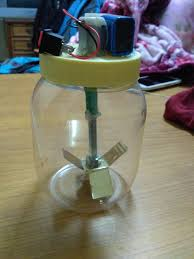

How to make a blender in Mbale

Ethan Moth
Blog
How to Make a Blender in Mbale: A DIY Guide
Introduction
In the heart of Mbale, amidst the vibrant culture and lush landscapes, lies a wealth of untapped potential. Today, we're diving into the world of DIY innovation, focusing on creating a blender using locally sourced materials. This not only empowers individuals to become self-sufficient but also contributes to sustainable living.
Materials Needed
- Motor: A discarded electric motor from an old appliance like a fan or sewing machine.
- Plastic Bottle: A sturdy, clear plastic bottle, preferably a 2-liter soda bottle.
- Wooden Base: A piece of sturdy wood, about 1 inch thick.
- Metal Rod: A smooth, round metal rod, approximately 1 foot long.
- Electrical Wire: Enough wire to connect the motor to a power source.
- Switch: A simple on/off switch.
- Glue: A strong adhesive like epoxy or super glue.
- Drill: A hand drill or power drill.
- Screws and Nuts: To secure the motor and switch to the wooden base.
Tools Required
- A sharp knife
- A pair of pliers
- A screwdriver
- Sandpaper
Steps to Build Your Blender
- Prepare the Motor:
- Disassemble the old appliance to extract the motor.
- Clean the motor thoroughly to remove any dirt or debris.
- Ensure the motor's shaft is smooth and free of any obstructions.
- Modify the Plastic Bottle:
- Cut the bottom of the plastic bottle to create a wide opening.
- Use a sharp knife or a heated metal rod to carefully cut four evenly spaced slots near the top of the bottle.
- These slots will hold the metal rod, which will serve as the blender's blade.
- Attach the Motor to the Base:
- Drill holes in the wooden base to secure the motor.
- Use screws and nuts to firmly attach the motor to the base.
- Connect the electrical wire to the motor, ensuring proper polarity.
- Assemble the Blender:
- Insert the metal rod through the slots in the plastic bottle.
- Attach one end of the metal rod to the motor shaft using glue or a mechanical coupling.
- Place the modified plastic bottle on the wooden base, aligning it with the motor shaft.
- Add the Switch:
- Drill a hole in the wooden base to accommodate the switch.
- Connect the switch to the electrical wire leading to the motor.
- Secure the switch to the base using screws or glue.
Using Your DIY Blender
- Add Ingredients: Fill the plastic bottle with the desired ingredients, such as fruits, vegetables, or liquids.
- Power On: Plug the blender into a power source and turn on the switch.
- Blend: The motor will rotate the metal rod, blending the ingredients within the bottle.
- Enjoy: Once the desired consistency is achieved, unplug the blender and carefully remove the bottle.
Safety Tips
- Handle the motor and electrical components with care.
- Always unplug the blender before cleaning or making adjustments.
- Avoid overfilling the bottle to prevent spills and accidents.
- Supervise children when using the blender.
By following these simple steps, you can create a functional blender using readily available materials. This DIY project not only empowers you but also promotes sustainable living and reduces reliance on store-bought appliances.
.